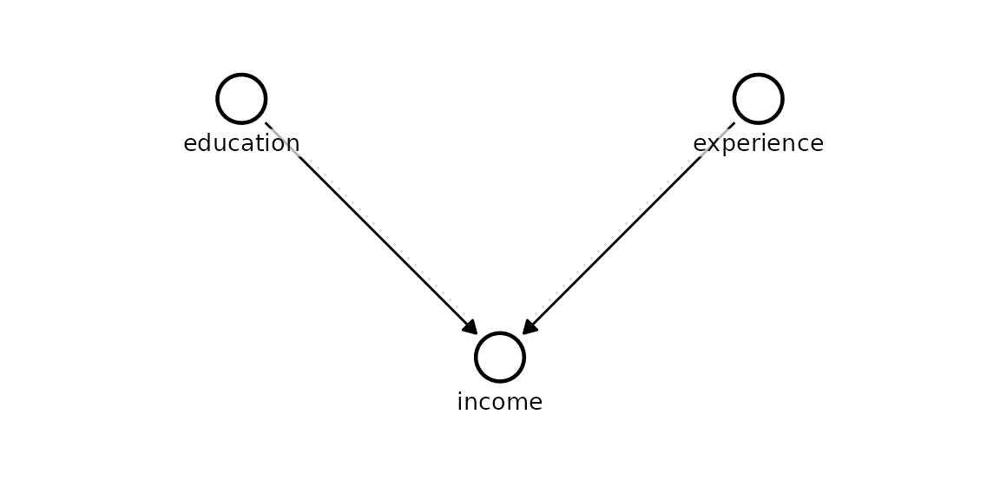
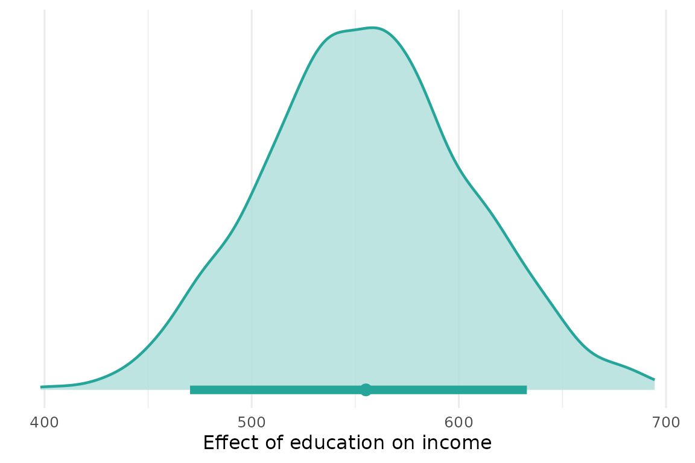
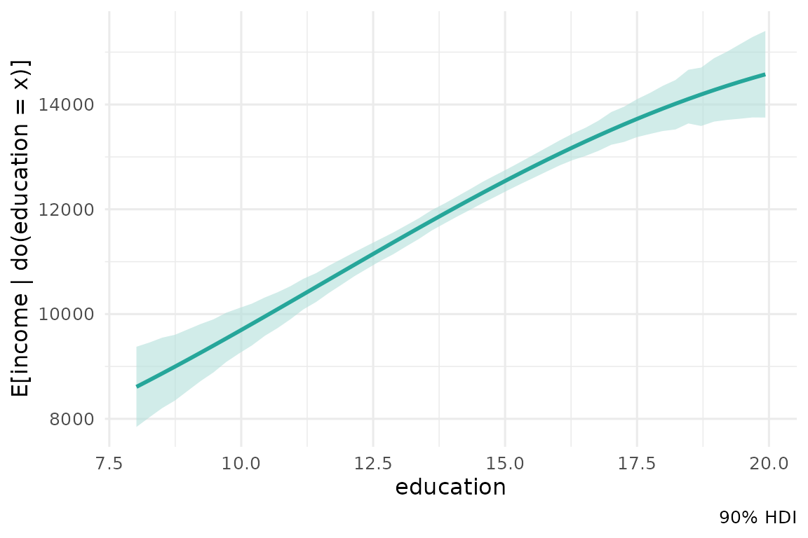

This quickstart fits a small causal model end to end: define the graph, fit it, and read off causal effects with full posterior uncertainty.
Define the causal structure
A Kagu model is a DAG - a named list mapping each node to its parent
nodes. Here income is caused by both education
and experience, which have no parents of their own (they
are root nodes, written as c()).
dag <- list(
education = c(),
experience = c(),
income = c("education", "experience")
)
model <- KaguModel$new(dag = dag)
# node_pos gives each node a c(row, col) grid coordinate (row increases
# downward, col rightward) so the layout renders predictably.
model$plot_dag(node_pos = list(
education = c(0, -1),
experience = c(0, 1),
income = c(1, 0)
))
The arrows encode our causal assumptions: an arrow A → B
means “A is a direct cause of B”. Everything Kagu computes is relative
to this structure, so it pays to get it right.
Simulate data and fit
We generate data in which each extra year of education adds £500 to income and each year of experience adds £200, then fit the model. Each node’s conditional distribution is modelled as a Gaussian process of its parents, so the fit adapts to whatever shape the relationship takes.
N <- 500
education <- rnorm(N, 14, 2)
experience <- rnorm(N, 10, 5)
income <- 3000 + 500 * education + 200 * experience + rnorm(N, sd = 2000)
data <- data.frame(
education = education,
experience = experience,
income = income
)
model$fit(data)Causal effects
The default effects() call returns the local
causal effect at the mean - the instantaneous slope of
target with respect to source, holding the
intervention central. For a linear mechanism this is directly comparable
to a regression coefficient, and here it recovers the data-generating
value of ≈ 500.
effect <- model$effects("education", "income")
effect$summary()
#> # A tibble: 1 × 8
#> source target from to mean sd hdi_lower hdi_upper
#> <chr> <chr> <dbl> <dbl> <dbl> <dbl> <dbl> <dbl>
#> 1 education income 13.9 14.9 555. 49.7 470. 633.The summary is a tidy tibble. Reading the columns:
-
from/to- the two intervention values being contrasted. -
mean- the posterior mean effect (our point estimate). -
sd- the posterior standard deviation (how uncertain that estimate is). -
hdi_lower/hdi_upper- the bounds of the 90% highest density interval (HDI): the narrowest interval containing 90% of the posterior probability. It is the Bayesian analogue of a confidence interval, but with the interpretation people usually want: there is a 90% probability the effect lies inside it, given the model and data. When the HDI excludes 0, the effect is credibly non-zero in that direction.
Standardised effect
std_units = TRUE reports the effect of a one
standard-deviation increase in the cause, centred at its mean.
This puts effects of variables measured on different scales onto a
common footing for comparison.
effect_sd <- model$effects("education", "income", std_units = TRUE)
effect_sd$summary()
#> # A tibble: 1 × 8
#> source target from to mean sd hdi_lower hdi_upper
#> <chr> <chr> <dbl> <dbl> <dbl> <dbl> <dbl> <dbl>
#> 1 education income 13.0 14.9 1076. 95.8 914. 1230.Explicit contrast
Pass values = c(from, to) to ask a concrete
counterfactual question. Here: how much more would someone with 16 years
of education earn than someone with 12, all else flowing through the
causal model?
effect_contrast <- model$effects("education", "income", values = c(12, 16))
effect_contrast$summary()
#> # A tibble: 1 × 8
#> source target from to mean sd hdi_lower hdi_upper
#> <chr> <chr> <dbl> <dbl> <dbl> <dbl> <dbl> <dbl>
#> 1 education income 12 16 2189. 192. 1874. 2506.The mean is roughly four times the unit effect, as expected for a four-year gap under a linear mechanism.
Visualising the posterior
plot() shows the full posterior distribution of the
effect - the point is the mean and the bar beneath is the HDI. The
spread is the uncertainty.
effect$plot()
Dose-response curve
A sweep traces the expected outcome across a grid of intervention
values, E[income | do(education = x)], with an HDI ribbon.
This is the interventional dose-response curve: what we expect income to
be if we set education to each value.
sweep <- model$effects("education", "income", sweep = TRUE)
sweep$plot()
Model summary
summary() returns a table across every node. For each
parent it reports the direct local effect - the
gradient of the node’s fitted function with respect to that parent,
evaluated at the parents’ means. For a linear relationship this is
exactly the slope, so here education and
experience recover ≈ 500 and ≈ 200. Each node also gets a
sigma (noise) row for its residual scale, and everything
carries a posterior mean, sd, and HDI.
model$summary()
#> # A tibble: 5 × 6
#> node term mean sd hdi_lower hdi_upper
#> <chr> <chr> <dbl> <dbl> <dbl> <dbl>
#> 1 education sigma (noise) 1.95 0.0637 1.86 2.07
#> 2 experience sigma (noise) 5.17 0.169 4.92 5.46
#> 3 income sigma (noise) 1936. 61.7 1832. 2035.
#> 4 income education 555. 49.7 470. 633.
#> 5 income experience 218. 19.0 186. 246.Diagnostics
diagnostics() reports the posterior draw count and
residual noise per node. (The Gaussian-process posterior is available in
closed form as a single sample, so the chain-based r-hat / ESS
diagnostics of MCMC do not apply.)
model$diagnostics("income")
#> # A tibble: 1 × 5
#> node n_chains n_draws sigma sigma_sd
#> <chr> <int> <int> <dbl> <dbl>
#> 1 income 1 1000 1935. 59.6Save and load
A fitted model (optionally with its data) round-trips to disk, so you can refit once and query effects later.
tmp <- tempfile(fileext = ".rds")
model$save(tmp)
loaded <- KaguModel$load(tmp)
loaded$effects("education", "income")$summary()
#> # A tibble: 1 × 8
#> source target from to mean sd hdi_lower hdi_upper
#> <chr> <chr> <dbl> <dbl> <dbl> <dbl> <dbl> <dbl>
#> 1 education income 13.9 14.9 555. 49.7 470. 633.